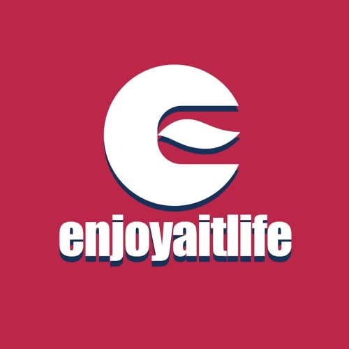
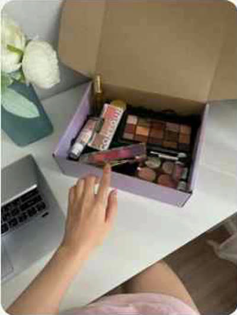
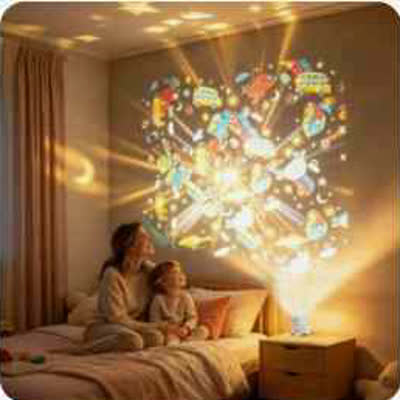
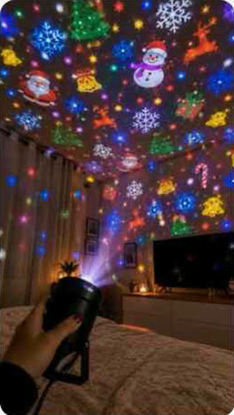
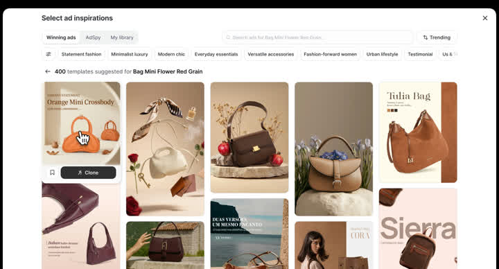
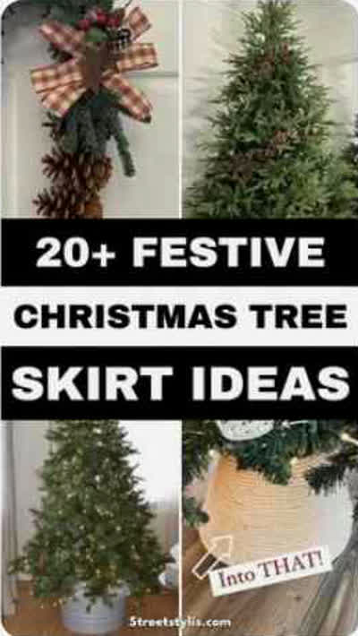
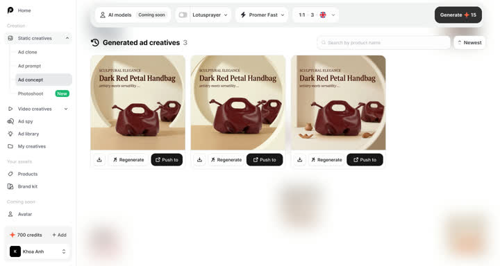

Quảng cáo Giáng sinh 1 · Một ảnh ra 3 video UGC (đèn chiếu)
Sản phẩm: đèn chiếu Giáng sinh. Hook đánh vào nỗi đau thật của người mua (leo thang, dây đèn rối), cho thấy 3 video ở 3 bối cảnh ngay 5 giây đầu, rồi cho xem Promer làm việc đó thế nào. Khoảng 52 giây, giọng Emma, chạy chuyển đổi.
Cách đọc
Mỗi hàng là một cảnh. Cột Bản A và Bản B khác nhau về hình và chuyển động; cột bên phải (lời đọc, chữ, tiếng) giống nhau. Anh có thể lấy cảnh 1 của A ghép cảnh 2 của B. Ảnh nhỏ là ảnh tham chiếu lấy trên Pinterest để hình dung bố cục, ánh sáng, cách cầm sản phẩm: chưa phải ảnh của video. Ảnh giao diện (khung xám trắng) là màn hình thật của Promer AI. Bản sửa 02/11: bám ghi chú marketing trong sheet (tệp merchant không giỏi làm video, show 2–3 video dồn dập ở 3 bối cảnh, lấy hình từ shop, nhấn sự đa dạng của Promer, không đi sâu model).0–5 giây
Bản A

Ảnh sản phẩm của shop nằm giữa, vỡ thành 3 khung dọc, mỗi khung một phòng. Ngay giây 1–2 đã thấy 3 video chạy.
Ảnh đầu: ảnh sản phẩm của shop (tham chiếu). Phòng: Pinterest cozy christmas living room ad.
Bản B

Bàn làm việc nhìn từ trên xuống: tay đặt ảnh sản phẩm, 3 tờ giấy rơi ra, mỗi tờ lật thành một video.
Pinterest woman unboxing product selfie: góc nhìn từ trên xuống, tay đưa vào khung.
Chung cho A và B
Lời: "One photo of this projector. Three UGC ads. No ladder. No tangled lights."
Chữ: 1 PHOTO → 3 UGC ADS
(nhỏ) No ladders · No tangled lights
Tiếng: riser rồi impact lúc vỡ hoặc lật
5–15 giây
Bản A



Mỗi video 3 giây, mỗi người một phòng: (1) phòng ngủ trẻ em, mẹ và bé nằm nhìn trần; (2) phòng khách cạnh cây thông, người cắm đèn chiếu lên tường; (3) góc tiệc, người nói với camera. Mỗi người nói đúng một nỗi đau: "No ladders." · "No tangled lights." · "Just plug in."
Từ khoá christmas light projector bedroom: mẹ con nhìn trần, cầm đèn chiếu lên trần.
Bản B


Cùng 3 lời thoại, nhưng ba người là ba kiểu selfie (cận mặt, nửa người, cầm sản phẩm sát má), xếp cạnh nhau như 3 màn hình, sáng lần lượt theo nhịp.
Từ khoá ugc creator holding product
Chung cho A và B
Lời: "Three creators. Three rooms. Not one ladder."
Chữ: Different room. Same projector.
Tiếng: whoosh mỗi cú cắt, tiếng bật đèn nhỏ
15–35 giây
Bản A

UI Promer toàn màn hình, nền ấm. 15–20 dán link · 20–26 Promer đọc quảng cáo đang thắng và gợi ý hook · 26–32 thư viện 5.000 avatar với bộ lọc tuổi, vùng, kiểu quay (nhấn sự đa dạng) · 32–35 bấm tạo.
Giao diện thật: UGC Ads, Select avatar (5000 avatars).
Bản B

Cùng 4 nhịp, nhưng UI nằm trên laptop đặt trên bàn, máy đẩy vào dần; ở nhịp avatar, con trỏ chọn lần lượt 3 người khác độ tuổi.
Giao diện thật: Generate video scripts, Select avatar.
Chung cho A và B
Lời: "Not a video person? Paste your product link. Promer finds the ads already winning, writes the hooks, and you pick the creator."
Chữ: Link → Winning ads → Hooks → Creator
Tiếng: click mỗi bước, pop khi hiện avatar
35–46 giây
Bản A

Quảng cáo đang thắng trong ngành trượt vào từ phải (che tên hãng), rồi biến thành bản của mình với đúng đèn chiếu của mình.
Giao diện thật: Ad Clone, chọn quảng cáo mẫu. Hãng thật ở Ad Library không lên hình.
Bản B


Một tờ quảng cáo đối thủ được chép thành tờ mới: tờ cũ nằm dưới, tờ mới hiện lên với đèn của mình.
Pinterest christmas tree skirt styling (tờ ý tưởng xếp lớp). Giao diện thật: Ad Clone, 3 kết quả.
Chung cho A và B
Lời: "Out of ideas? See which ads are winning in your niche, or clone one for your own product."
Chữ: Spy · Clone · Launch
Tiếng: pop, swipe
46–52 giây
Bản A
Logo Promer và nút viền chạy màu (dùng lại kiểu CTA Shorts 01).
Không cần ảnh tham chiếu.
Bản B
Giống bản A (CTA cố định theo sheet).
Không cần ảnh tham chiếu.
Chung cho A và B
Lời: "Make your first test ad today. Plans from nine dollars a month."
Chữ: promer.ai · From $9/mo
Tiếng: chime khi hiện logo
01_Brand/design-system/assets/product-screens/. Ảnh sản phẩm của shop chỉ để tham chiếu: video phải xoá logo và chữ của shop. Chưa có: key visual, ảnh/video AI, dựng After Effects.